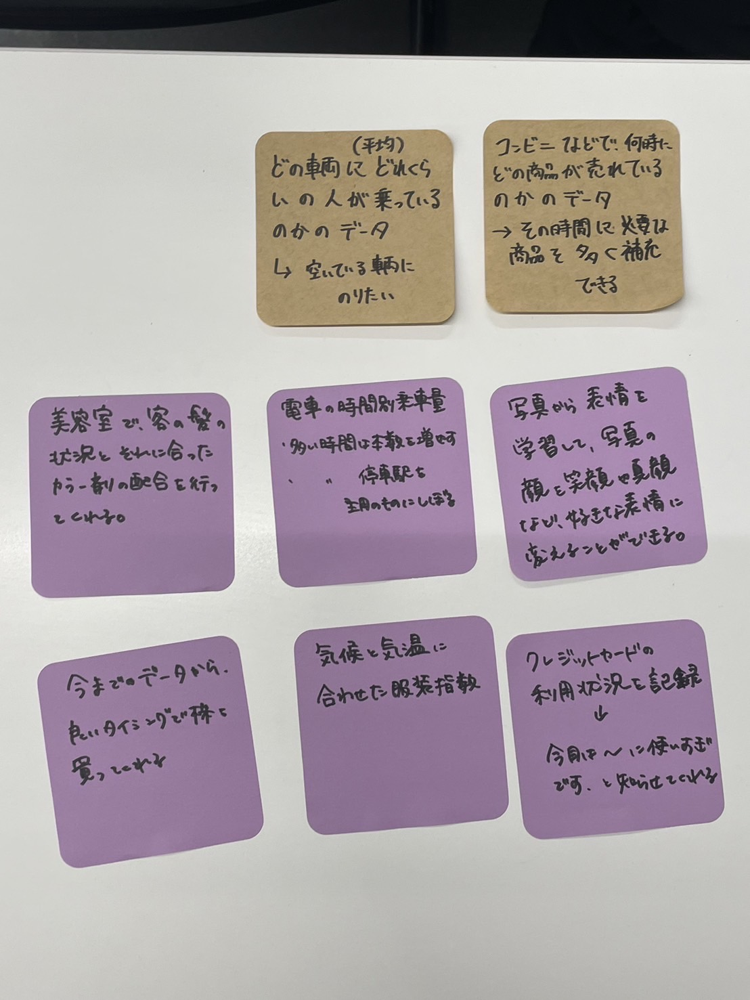

1 IoT(データ保存)で何ができそうか？どのようなデータを保存していくと価値あるものになるか？グループワークした内容（ポストイット画像）

電車でどの車両にどれくらいの人が乗っているのかのデータ
どの車両がどれくらい空いているのか、混んでいるのかのデータがわかれば、少しでも空いている電車に乗れるな・・・と。
コンビニなどでどの時間に何の商品が売れているのかのデータ
どの時間帯に何の商品が売れているのかがわかれば、その時間帯にその商品を中心に補充しておけば売り場の回転率が上がりそう。
美容室でお客の髪の状況とそれにあったカラー剤の配合を行ってくれる
髪も傷みにくくなるし美容師さんも助かりそう
電車の時間別乗車料
人が多い時間帯の電車の本数を増やしたり、停車駅も考えたりできる
写真から表情を学習して写真の顔を笑顔や真顔など好きな表情にできる
大人数で写真を撮ったりする際、大体誰かが事故画になっているのでそれを改善できる
今までのデータから良いタイミングで株を買ってくれる
難しそうだからデータに頼りたい
気候と気温にあわせた服装指数
春や秋は特に服装が決めにくいので参考にしたい
クレジットカードの利用状況を記録
利用状況に合わせて「使いすぎですよ」と通知が来て欲しい。お金の使いすぎを減らす